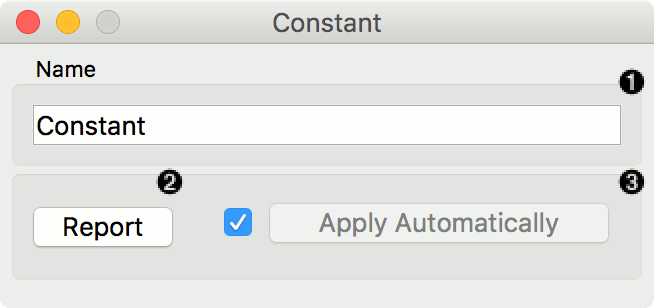
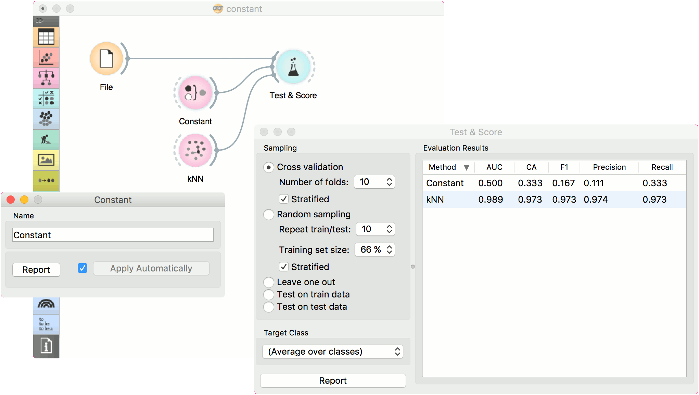
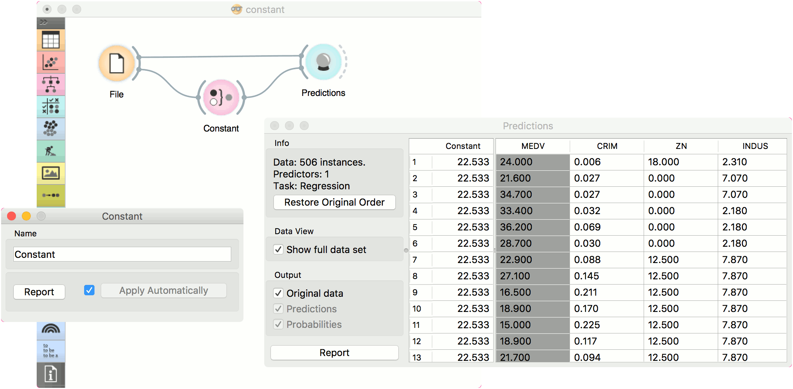

Constant
Predict the most frequent class or mean value from the training set.
Inputs
- Data: input dataset
- Preprocessor: preprocessing method(s)
Outputs
- Learner: majority/mean learning algorithm
- Model: trained model
This learner produces a model that always predicts themajority for classification tasks and mean value for regression tasks.
For classification, when predicting the class value with Predictions, the widget will return relative frequencies of the classes in the training set. When there are two or more majority classes, the classifier chooses the predicted class randomly, but always returns the same class for a particular example.
For regression, it learns the mean of the class variable and returns a predictor with the same mean value.
The widget is typically used as a baseline for other models.

This widget provides the user with two options:
- The name under which it will appear in other widgets. Default name is “Constant”.
- Produce a report.
If you change the widget’s name, you need to click Apply. Alternatively, tick the box on the left side and changes will be communicated automatically.
Preprocessing
Constant does not use any preprocessing.
Examples
In a typical classification example, we would use this widget to compare the scores of other learning algorithms (such as kNN) with the default scores. Use iris dataset and connect it to Test & Score. Then connect Constant and kNN to Test & Score and observe how well kNN performs against a constant baseline.

For regression, we use Constant to construct a predictor in Predictions. We used the housing dataset. In Predictions, you can see that Mean Learner returns one (mean) value for all instances.
